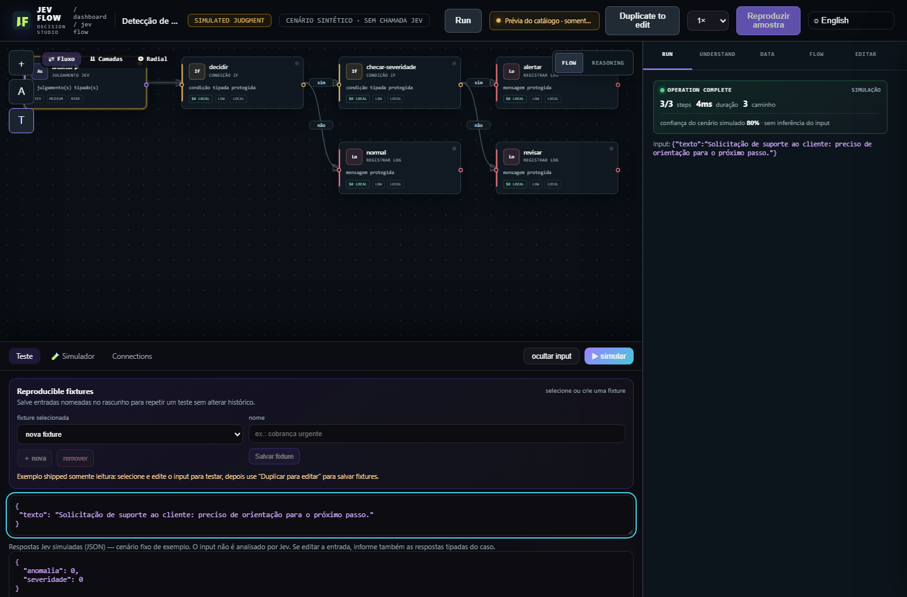

Accept the input
Define the fields a workflow accepts and validate the incoming data against that schema.
INPUTOPEN-SOURCE STUDIO · AI-ASSISTED WORKFLOWS
Jev Flow is an open-source studio for AI-assisted workflows. Jev answers a focused question with a structured result, such as a category, probability, or score. The workflow checks the answer, applies your rules, and selects the next step in code. An execution trace shows each step.
Run the application locally. Connect a Jev-compatible backend for live typed judgments.

01 / THE PROBLEM
A single prompt can classify input, choose a path, and draft an action at once. Jev Flow separates those operations into steps you can inspect and test.
Jev provides a typed judgment. Rules in code choose the route.
External effects require explicit gates.
02 / HOW IT WORKS
Jev provides typed answers where a flow uses them. Code validates each answer, applies your rules, and records the route.
Define the fields a workflow accepts and validate the incoming data against that schema.
INPUTAsk Jev a bounded question. It returns a category, probability, or score in a known shape.
TYPED JUDGMENTCode checks the type and range, applies deterministic rules, and selects the next branch.
CODE ROUTEFollow the executed path and see answers, timing, and usage when available.
EXECUTION TRACEThe boundary: Jev interprets a limited question; the application decides what to do with its answer.
SEE JEV FLOW IN ACTION
See how typed judgments meet code-owned rules, then tour the Studio, Compendium, a live Arena comparison, games, and the simulated road. Each version has two-speaker narration and captions burned into the video.
03 / COMPARE
Send the same text to Jev and a selected language model. Jev returns structured answers to specific questions; the model replies in free text. Compare their answers and response times. Token use appears when available, and cost is labeled as an estimate.

Each answer stays beside its source and measured response time. Token use appears when available; cost is shown as an estimate.
Run the local application ↗04 / EXPLORE
In the Compendium, filter configurations by pattern and use case, open their JSON, test them in the Studio, and install the ones you want to edit.
The Compendium generates configurations on demand. Its certificate records validity and unique IDs for all 388,080. Choose one as a starting point, then adapt it in the Studio.
Inspect the certificate ↗


MORE TO EXPLORE
Labs includes spam screening, evidence checks, rescue scenarios, chess, and Blast Garden. Other tools help you build, test, and connect workflows.
Ship Pack provides 10 Jevlet definitions and 11 named gates for common decision tasks.
Run 52 repeatable cases across 12 scenarios and compare each answer with its fixed expected result.
Play tic-tac-toe against local minimax, try fictional combat with optional Jev judgments, or advance a city one tick at a time with local rules or a live Jev call. Prompt tools use 16 patterns and help judge cache reuse and content priority.
Use webhooks, subflows, loops, error routes, and design chat in the Studio. Code gates external actions.
Connect a Jev-compatible backend for typed judgments, or set up optional local Laya. Configure an LLM separately for Arena and design chat.
05 / GET STARTED
Install Node.js 20 or later, clone the repository, and start the app. Explore the Studio, examples, and local tests without credentials. Connect a Jev-compatible backend for typed judgments, or set up optional local Laya. Configure an LLM separately for Arena and design chat.
This website is a static guide; the Node application runs on your machine or protected server.
git clone https://github.com/daltonrpj/jev-flow.git
cd jev-flow
npm ci
npm startOpen http://127.0.0.1:8723/jev/flows in your browser.